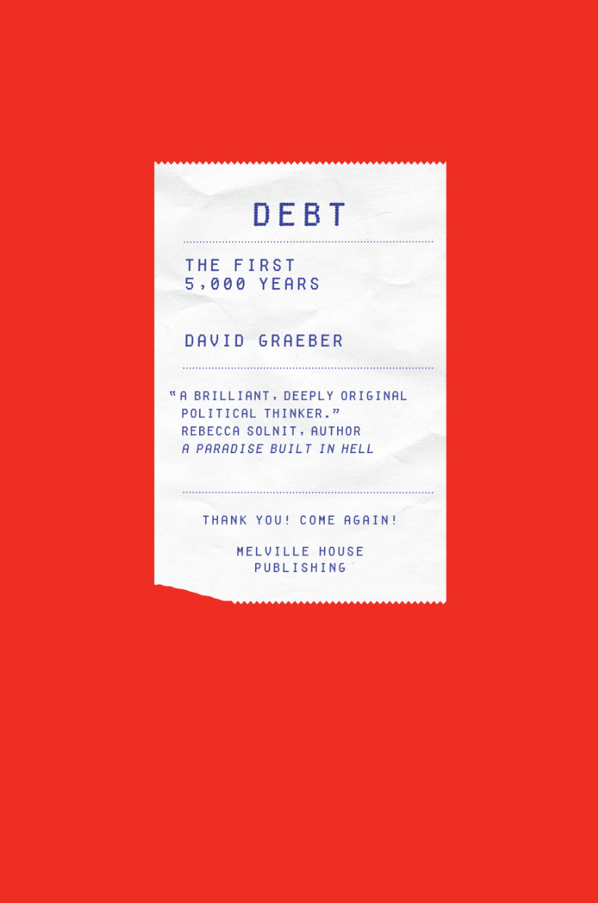

Debt: The First 5,000 Years by anthropologist and anarchist activist David Graeber (1961 - 2020) was published in 2011, mentioned on Wikipedia as his best-known book.
The whole field of economics is a conspiracy born of the relationship between Adam Smith and capitalism.
- In 330 BC, Aristotle was speculating on where money came from. At first, he suggested, families must have produced everything they needed for themselves. Gradually, some would presumably have specialized and began swapping things.5 Money, Aristotle assumed, must have emerged from such a process.
Neither Aristotle nor his medieval repeaters were ever clear as to exactly how money evolved from barter. - Adam Smith set his story in aboriginal North America (others preferred Africa or the Pacific). In Smith's time, at least it could be said that reliable information on Native American economic systems was unavailable in Scottish libraries. For centuries now, explorers have been trying to find this fabled land of barter-none with success.
- Stanley Jevons, for example, who in 1871 wrote what has come to be considered the classic book on the origins of money, took his examples straight from Smith, with Indians swapping venison for elk and beaver hides, and made no use of actual descriptions of Indian life that made it clear that Smith had simply made this up.